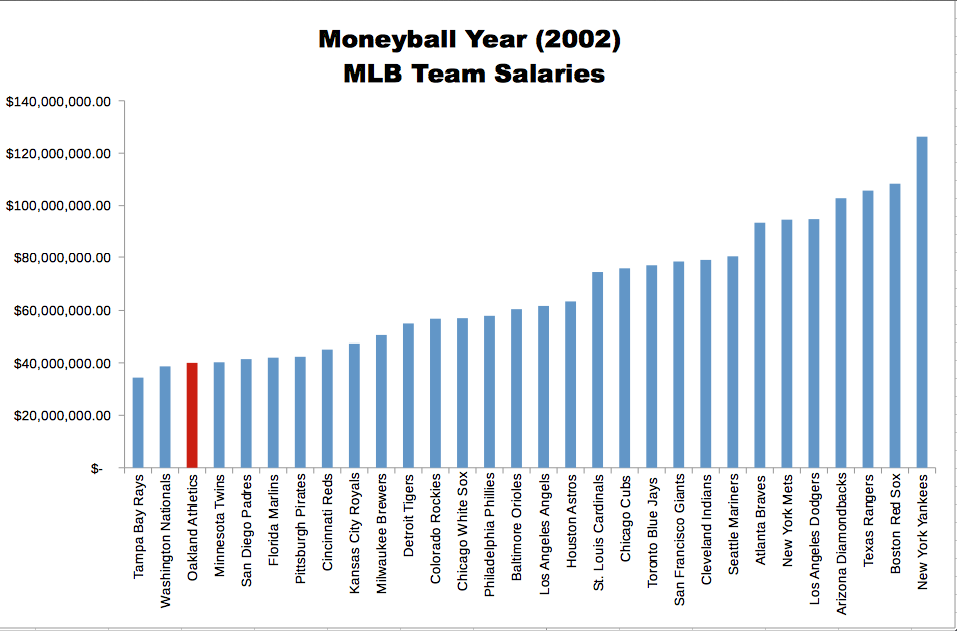
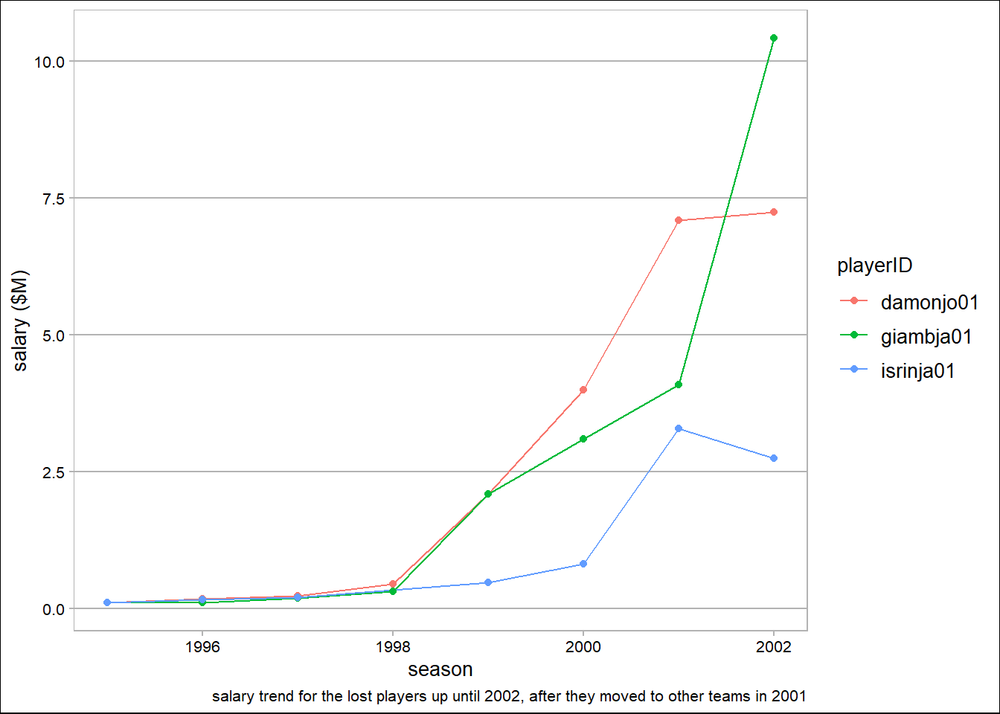

You don’t need to know much about Baseball to understand the analysis. If you’re totally unfamiliar with Baseball, check out this useful explanatory video!
The 2002 Oakland A’s
The Oakland Athletics’ 2002 season was the team’s 35th in Oakland, California. It was also the 102nd season in franchise history. The Athletics finished first in the American League West with a record of 103-59.
The Athletics’ 2002 campaign ranks among the most famous in franchise history. Following the 2001 season, Oakland saw the departure of three key players (the lost boys). Billy Beane, the team’s general manager, responded with a series of under-the-radar free agent signings. The new-look Athletics, despite a comparative lack of star power, surprised the baseball world by besting the 2001 team’s regular season record. The team is most famous, however, for winning 20 consecutive games between August 13 and September 4, 2002. The Athletics’ season was the subject of Michael Lewis’ 2003 book Moneyball: The Art of Winning an Unfair Game (as Lewis was given the opportunity to follow the team around throughout that season).
This project is based off the book written by Michael Lewis (later turned into a movie - see the magic moment).
Moneyball Book
The central premise of book Moneyball is that the collective wisdom of baseball insiders (including players, managers, coaches, scouts, and the front office) over the past century is subjective and often flawed. Statistics such as stolen bases, runs batted in, and batting average, typically used to gauge players, are relics of a 19th-century view of the game and the statistics available at that time. The book argues that the Oakland A’s’ front office took advantage of more analytical gauges of player performance to field a team that could better compete against richer competitors in Major League Baseball (MLB).
Rigorous statistical analysis had demonstrated that on-base percentage and slugging percentage are better indicators of offensive success, and the A’s became convinced that these qualities were cheaper to obtain on the open market than more historically valued qualities such as speed and contact. These observations often flew in the face of conventional baseball wisdom and the beliefs of many baseball scouts and executives.
By re-evaluating the strategies that produce wins on the field, the 2002 Athletics, with approximately US 44 million dollars in salary, were competitive with larger market teams such as the New York Yankees, who spent over US$125 million in payroll that same season.

Because of the team’s smaller revenues, Oakland is forced to find players undervalued by the market, and their system for finding value in undervalued players has proven itself thus far. This approach brought the A’s to the playoffs in 2002 and 2003.
In this project we’ll work with some data and with the goal of trying to find replacement players for the ones lost at the start of the off-season - During the 2001–02 offseason, the team lost three key free agents to larger market teams: 2000 AL MVP Jason Giambi to the New York Yankees, outfielder Johnny Damon to the Boston Red Sox, and closer Jason Isringhausen to the St. Louis Cardinals.
Let’s get started!
The main goal of this project is to help the Oakland A’s recruit under-valued players!
Data prep
We’ll be using data from Sean Lahaman’s Website a very useful source for baseball statistics. The documentation for the csv files that we will be using is located in the readme2013.txt file in the github repo. You may need to reference this to understand what acronyms stand for.
We know from literature that on-base percentage (OBP) and slugging percentage (SLG) are better indicators of offensive success, so we’re calculating and adding them to our data, which is made of two data extracts that contain stats and salaries; we are merging them by playerID and yearID, illustrating a sample of the results as follows:
Code
######################################## data prep########################################add features to databatting$BA <- batting$H / batting$ABbatting <- batting %>%mutate(OBP = (H+BB+HBP)/(AB+BB+HBP+SF))batting <- batting %>%mutate(X1B = H-X2B-X3B-HR)batting <- batting %>%mutate(SLG = (X1B +2*X2B +3*X3B +4*HR)/AB)#remove data from batting (salaries data set only have data from 1985 onwards)batting <- batting %>%filter(yearID>=1985)#merge both datasets batting and sal to combine player stats with salariesexcluded.fields <-c('teamID','lgID')sal.excluding.fields <-select(sal,-any_of(excluded.fields))combo <-merge(batting,sal.excluding.fields,by=c('playerID','yearID'))#show resultsprint(head(arrange(select(filter(combo,yearID==2001),playerID,teamID,AB,OBP,SLG,salary),desc(OBP*AB))))
Is there anything we can learn from the lost players?
First of all let’s define the OA’s budget to sign 3 new players. As per the chart below, the total in salaries for them in 2001 amounted to $14.5M, so rounding we have a total budget of $15M to sign 3 new players.
Code
######################################## analyze lost players########################################get dataframe with 3 lost playerslost.players <- combo %>%subset(playerID %in%c('giambja01','damonjo01','isrinja01'))#visualize trend of salaries through yearstrendsal.lostplayers <-ggplot(filter(lost.players,yearID<2003),aes(yearID,round(salary/1e6,2))) +geom_line(aes(group=playerID,color=playerID)) +geom_point(aes(color=playerID)) +theme_calc() +labs(y='salary ($M)',x='season',caption='salary trend for the lost players up until 2002, after they moved to other teams in 2001')trendsal.lostplayers

Other than the budget constraint, what are other variables that we should be focusing on among the entire dataset?
Now we have all the information we need, let’s put together the following 3 constraints:
The total combined salary of the three players can not exceed 15 million dollars.
Their combined number of At Bats (AB) needs to be equal to or greater than the lost players.
Their mean OBP had to be equal to or greater than the mean OBP of the lost players.
Salary cap = $15M
AB combined = 1795
OBP mean = 0.3771385
Finding replacement players
As a result of cutting down our data to 2001, excluding OA’s players and those who have a salary >= salary.cap - 2 x 3rd quartile of salary (having signed one player we want to have enough money to sign the other two) and performing some cleaning operations we have our starting list of potential players.
Code
#get a dataframe with 2001 players excluding the 3 who left and the ones in the OAK teamexternal.players <- combo %>%subset(yearID==2001&!(playerID %in%c('giambja01','damonjo01','isrinja01')) & (teamID !='OAK') & salary < salary.cap*1e6-2*(quantile(combo$salary)[4]) &!(is.na(salary)) &!(is.na(AB)) &!(is.na(OBP)) & OBP >0& AB >0)#arrange dataframe and calculate initial pool of playersexternal.players <- external.players %>%arrange(desc(OBP*AB),salary) %>%select(playerID,yearID,teamID,lgID,AB,OBP,salary)pool.players <-nrow(external.players)
It results in a pool of 604 players. The idea is to compute combinations of 3 players that meet all the criteria defined and provide them in order of maximizing the stats AB, OBP and minimizing the salary paid.
For the sake of a quick computing we are going to cut the pool of players down by picking the top 14 sample sorted by descending product AB x OBP and ascending salary.
Code
#reduce the dataframe to top 14external.players <-head(external.players,14)print(external.players)
Billy Beane has to sign any of the following combinations of 3 players to made it to the playoffs in the next season 2002 (sorted from cheapest to most expensive):
Code
#go through combinations of 3 players and append those which satisfy the conditions to a dataframe ordering them from best to worse optionsdf <- external.playersn <-1eligible.combinations <-list()list.candidate.players <-vector()list.unique.players <-vector()for(p1 in df$playerID) {for(p2 in df$playerID) {if(p1!=p2) {for(p3 in df$playerID) {if(p1!=p3 & p2!=p3) {#condition 1 salary.players <-sum(filter(df,playerID %in%c(p1,p2,p3))$salary) c1 <- salary.players <= salary.cap*1e6#condition 2 AB.players <-sum(filter(df,playerID %in%c(p1,p2,p3))$AB) c2 <- AB.players >= AB.min#condition 3 OBP.players <-mean(filter(df,playerID %in%c(p1,p2,p3))$OBP) c3 <- OBP.players >= OBP.mean#check allif(all(c1,c2,c3)) { candidate.players <-paste(sort(c(p1,p2,p3)),collapse=" | ") list.unique.players <-sort(unique(append(list.unique.players, c(p1,p2,p3))))#check combination of playersif(!(candidate.players %in% list.candidate.players)) { eligible.combinations <-append(eligible.combinations, list(data.frame(candidate.players,salary.total=salary.players,AB.combined=AB.players,OBP.mean=OBP.players))) list.candidate.players <-append(list.candidate.players,candidate.players) n <- n +1 } } } else {next} } } else {next} }}#potential winning combinations of players to sign indf.eligible.combinations <-arrange(rbindlist(eligible.combinations),salary.total,desc(OBP.mean*AB.combined))print(df.eligible.combinations)
Organizing the winning combinations into a scatterplot divided in four quadrants, we can gather more insight as to which are the best combinations taking into account that the size of dots represents the salary.total, so we might decide that a combination that is slightly inferior in terms of stats (AB.combined & OBP.mean) is much more worth it because it would cost much less, sparing part of the budget to sign in additional players that would strengthen the team in a different way.
---title: "MoneyBall"subtitle: "Helping Billy Beane (or Brad Pitt) to make it to the 2002 playoffs with the Oakland A's"author: "David Desquens"date: '`r Sys.Date()`'format: html: code-fold: true code-tools: true df-print: paged toc: true number_sections: falseeditor: visual---{fig-align="left"}## Context & Background*Source: [Wikipedia](https://en.wikipedia.org/wiki/Moneyball)*### Rules of BaseballYou don't need to know much about Baseball to understand the analysis. If you're totally unfamiliar with Baseball, check out this [useful explanatory video!](https://www.youtube.com/watch?v=0bKkGeROiPA)### The 2002 Oakland A'sThe Oakland Athletics' 2002 season was the team's 35th in Oakland, California. It was also the 102nd season in franchise history. The Athletics finished first in the American League West with a record of 103-59.The Athletics' 2002 campaign ranks among the most famous in franchise history. Following the 2001 season, Oakland saw the departure of three key players (the lost boys). Billy Beane, the team's general manager, responded with a series of under-the-radar free agent signings. The new-look Athletics, despite a comparative lack of star power, surprised the baseball world by besting the 2001 team's regular season record. The team is most famous, however, for winning 20 consecutive games between August 13 and September 4, 2002. The Athletics' season was the subject of Michael Lewis' 2003 book Moneyball: The Art of Winning an Unfair Game (as Lewis was given the opportunity to follow the team around throughout that season).This project is based off the book written by Michael Lewis (later turned into a movie - see [the magic moment](https://youtu.be/yGf6LNWY9AI?si=zsLayKwV5YBw-Jqm)).### Moneyball BookThe central premise of book *Moneyball* is that the collective wisdom of baseball insiders (including players, managers, coaches, scouts, and the front office) over the past century is subjective and often flawed. Statistics such as stolen bases, runs batted in, and batting average, typically used to gauge players, are relics of a 19th-century view of the game and the statistics available at that time. The book argues that the Oakland A's' front office took advantage of more analytical gauges of player performance to field a team that could better compete against richer competitors in Major League Baseball (MLB).Rigorous statistical analysis had demonstrated that on-base percentage and slugging percentage are better indicators of offensive success, and the A's became convinced that these qualities were cheaper to obtain on the open market than more historically valued qualities such as speed and contact. These observations often flew in the face of conventional baseball wisdom and the beliefs of many baseball scouts and executives.By re-evaluating the strategies that produce wins on the field, the 2002 Athletics, with approximately US 44 million dollars in salary, were competitive with larger market teams such as the New York Yankees, who spent over US\$125 million in payroll that same season.{fig-align="center"}Because of the team's smaller revenues, Oakland is forced to find players undervalued by the market, and their system for finding value in undervalued players has proven itself thus far. This approach brought the A's to the playoffs in 2002 and 2003.In this project we'll work with some data and with the goal of trying to find replacement players for the ones lost at the start of the off-season - During the 2001--02 offseason, the team lost three key free agents to larger market teams: 2000 AL MVP Jason Giambi to the New York Yankees, outfielder Johnny Damon to the Boston Red Sox, and closer Jason Isringhausen to the St. Louis Cardinals.## Let's get started!The main goal of this project is to help the Oakland A's recruit under-valued players!{fig-align="center"}### Data prepWe'll be using data from [Sean Lahaman's Website](http://www.seanlahman.com) a very useful source for baseball statistics. The documentation for the csv files that we will be using is located in the readme2013.txt file in the [github repo](https://github.com/ddesquens/ddesquens.github.io/tree/main/R%20projects/Moneyball). You may need to reference this to understand what acronyms stand for.```{r}#| label: load-packages-data-inputs#| include: false######################################## libraries & inputs########################################librarieslibrary(tidyverse)library(plotly)library(ggthemes)library(data.table)#data inputsbatting <-read.csv('Batting.csv')sal <-read.csv('Salaries.csv')```We know from literature that on-base percentage (`OBP`) and slugging percentage (`SLG`) are better indicators of offensive success, so we're calculating and adding them to our data, which is made of two data extracts that contain stats and salaries; we are merging them by `playerID` and `yearID`, illustrating a sample of the results as follows:```{r}#| label: data-prep######################################## data prep########################################add features to databatting$BA <- batting$H / batting$ABbatting <- batting %>%mutate(OBP = (H+BB+HBP)/(AB+BB+HBP+SF))batting <- batting %>%mutate(X1B = H-X2B-X3B-HR)batting <- batting %>%mutate(SLG = (X1B +2*X2B +3*X3B +4*HR)/AB)#remove data from batting (salaries data set only have data from 1985 onwards)batting <- batting %>%filter(yearID>=1985)#merge both datasets batting and sal to combine player stats with salariesexcluded.fields <-c('teamID','lgID')sal.excluding.fields <-select(sal,-any_of(excluded.fields))combo <-merge(batting,sal.excluding.fields,by=c('playerID','yearID'))#show resultsprint(head(arrange(select(filter(combo,yearID==2001),playerID,teamID,AB,OBP,SLG,salary),desc(OBP*AB))))``````{r}#| label: adhoc-calc#| include: falsetotal.salaries <-round(sum((combo %>%subset(playerID %in%c('giambja01','damonjo01','isrinja01') & yearID==2001))$salary)/1e6,1)```### Analyzing the lost playersIs there anything we can learn from the lost players?\First of all let's define the OA's budget to sign 3 new players. As per the chart below, the total in salaries for them in 2001 amounted to \$`r total.salaries`M, so rounding we have a **total budget** of **\$15M** to sign 3 new players.```{r}#| label: lost-players######################################## analyze lost players########################################get dataframe with 3 lost playerslost.players <- combo %>%subset(playerID %in%c('giambja01','damonjo01','isrinja01'))#visualize trend of salaries through yearstrendsal.lostplayers <-ggplot(filter(lost.players,yearID<2003),aes(yearID,round(salary/1e6,2))) +geom_line(aes(group=playerID,color=playerID)) +geom_point(aes(color=playerID)) +theme_calc() +labs(y='salary ($M)',x='season',caption='salary trend for the lost players up until 2002, after they moved to other teams in 2001')trendsal.lostplayers```Other than the budget constraint, what are other variables that we should be focusing on among the entire dataset?```{r}#| label: lost-player-stats#| echo: false#concentrating on the pre-season 2002 data (that is from season 2001)lost.players.2001<- lost.players %>%filter(yearID==2001) %>%select(playerID,H,X2B,X3B,HR,OBP,SLG,BA,AB,salary)print(lost.players.2001)```Now we have all the information we need, let's put together the following 3 constraints:- The total combined `salary` of the three players can not exceed 15 million dollars.- Their combined number of At Bats (`AB`) needs to be equal to or greater than the lost players.- Their mean `OBP` had to be equal to or greater than the mean OBP of the lost players.```{r}#| label: calc-constraints#| echo: false#calculating constraintssalary.cap <-ceiling(total.salaries)AB.min <-sum(lost.players.2001$AB)OBP.mean <-mean(lost.players.2001$OBP)cat("Salary cap =", gsub(" ", "", paste("$", salary.cap, "M")),"\nAB combined =", AB.min,"\nOBP mean =", round(OBP.mean,7))```### Finding replacement playersAs a result of cutting down our data to 2001, excluding OA's players and those who have a `salary >= salary.cap - 2 x 3rd quartile of salary` (having signed one player we want to have enough money to sign the other two) and performing some cleaning operations we have our starting list of potential players.```{r}#| label: pool-players#get a dataframe with 2001 players excluding the 3 who left and the ones in the OAK teamexternal.players <- combo %>%subset(yearID==2001&!(playerID %in%c('giambja01','damonjo01','isrinja01')) & (teamID !='OAK') & salary < salary.cap*1e6-2*(quantile(combo$salary)[4]) &!(is.na(salary)) &!(is.na(AB)) &!(is.na(OBP)) & OBP >0& AB >0)#arrange dataframe and calculate initial pool of playersexternal.players <- external.players %>%arrange(desc(OBP*AB),salary) %>%select(playerID,yearID,teamID,lgID,AB,OBP,salary)pool.players <-nrow(external.players)```It results in a pool of `r pool.players` players. The idea is to compute combinations of 3 players that meet all the criteria defined and provide them in order of maximizing the stats `AB`, `OBP` and minimizing the `salary` paid.For the sake of a quick computing we are going to cut the pool of players down by picking the top 14 sample sorted by descending product `AB x OBP` and ascending `salary`.```{r}#| label: pool-reduction#reduce the dataframe to top 14external.players <-head(external.players,14)print(external.players)```Billy Beane has to sign any of the following combinations of 3 players to made it to the playoffs in the next season 2002 (sorted from cheapest to most expensive):```{r}#| label: loop-computing#go through combinations of 3 players and append those which satisfy the conditions to a dataframe ordering them from best to worse optionsdf <- external.playersn <-1eligible.combinations <-list()list.candidate.players <-vector()list.unique.players <-vector()for(p1 in df$playerID) {for(p2 in df$playerID) {if(p1!=p2) {for(p3 in df$playerID) {if(p1!=p3 & p2!=p3) {#condition 1 salary.players <-sum(filter(df,playerID %in%c(p1,p2,p3))$salary) c1 <- salary.players <= salary.cap*1e6#condition 2 AB.players <-sum(filter(df,playerID %in%c(p1,p2,p3))$AB) c2 <- AB.players >= AB.min#condition 3 OBP.players <-mean(filter(df,playerID %in%c(p1,p2,p3))$OBP) c3 <- OBP.players >= OBP.mean#check allif(all(c1,c2,c3)) { candidate.players <-paste(sort(c(p1,p2,p3)),collapse=" | ") list.unique.players <-sort(unique(append(list.unique.players, c(p1,p2,p3))))#check combination of playersif(!(candidate.players %in% list.candidate.players)) { eligible.combinations <-append(eligible.combinations, list(data.frame(candidate.players,salary.total=salary.players,AB.combined=AB.players,OBP.mean=OBP.players))) list.candidate.players <-append(list.candidate.players,candidate.players) n <- n +1 } } } else {next} } } else {next} }}#potential winning combinations of players to sign indf.eligible.combinations <-arrange(rbindlist(eligible.combinations),salary.total,desc(OBP.mean*AB.combined))print(df.eligible.combinations)```Organizing the winning combinations into a scatterplot divided in four quadrants, we can gather more insight as to which are the best combinations taking into account that the size of dots represents the `salary.total`, so we might decide that a combination that is slightly inferior in terms of stats (`AB.combined` & `OBP.mean`) is much more worth it because it would cost much less, sparing part of the budget to sign in additional players that would strengthen the team in a different way.```{r}#| label: winning-plot#x_mid <-mean(c(max(df.eligible.combinations$AB.combined, na.rm =TRUE), min(df.eligible.combinations$AB.combined, na.rm =TRUE)))y_mid <-mean(c(max(df.eligible.combinations$OBP.mean, na.rm =TRUE), min(df.eligible.combinations$OBP.mean, na.rm =TRUE)))plot.combinations <- df.eligible.combinations %>%mutate(quadrant =case_when(AB.combined > x_mid & OBP.mean > y_mid ~"Q1", AB.combined <= x_mid & OBP.mean > y_mid ~"Q2", AB.combined <= x_mid & OBP.mean <= y_mid ~"Q3",TRUE~"Q4"))#plot winning combinationsscatterplot.combinations <-ggplot(plot.combinations, aes(AB.combined, OBP.mean,color=quadrant,size=salary.total)) +geom_vline(xintercept = x_mid) +geom_hline(yintercept = y_mid) +geom_point(alpha=0.45) +theme_calc()scatterplot.combinations```